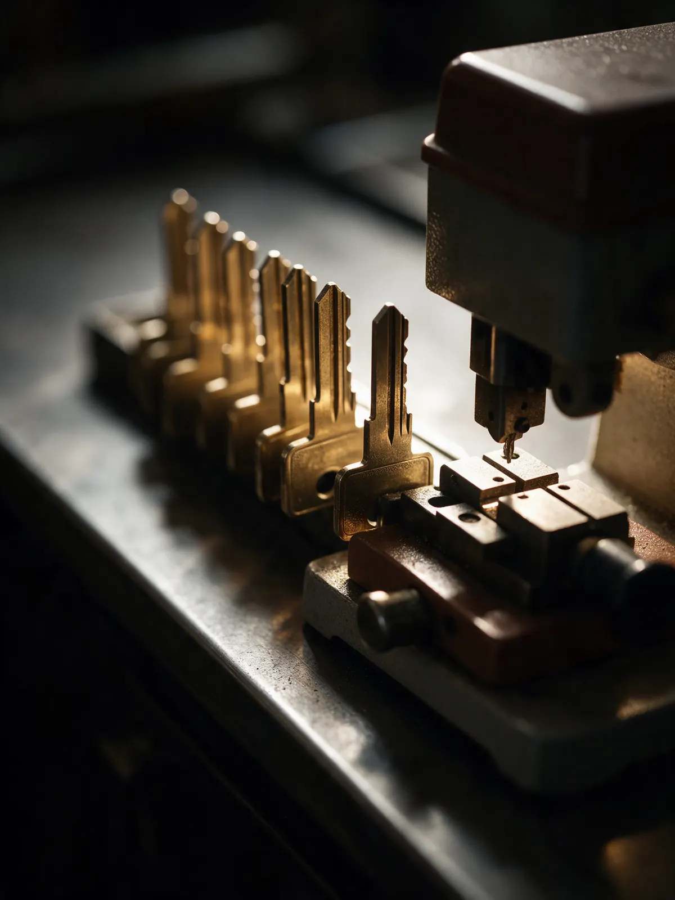
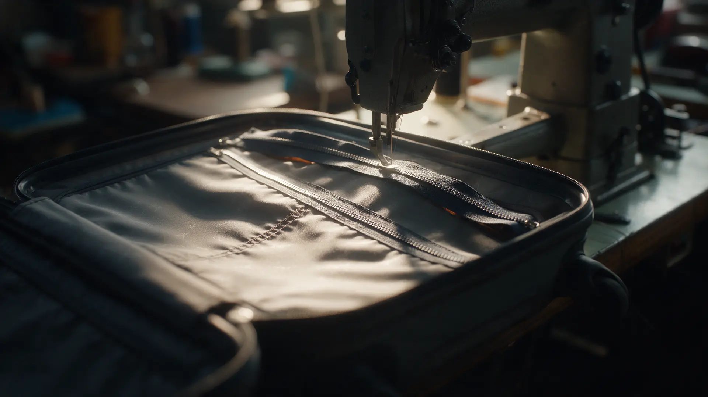

Мастерская · Омск, ул. 10 лет Октября, 72
Ремонт обуви, дубликаты ключей и заточка в Омске – быстро и за один визит
Обувь, куртки и чемоданы, ключи и заточка ножей и ножниц. Квитанция и гарантия – по отзывам клиентов.
- Дубликат ключа за несколько минут
- Ремонт обуви – по отзывам за день
- Квитанция и гарантия
Что делает мастерская
Перечень – по отзывам клиентов на Яндекс.Картах. Цены называет мастер, потому что работа у каждой вещи своя.
Работы
- Ремонт обувитуфли, ботинкиуточнить
- Дубликат ключапо образцууточнить
- Ремонт чемоданамолния, замокуточнить
- Ремонт куртокмолния, швыуточнить
- Заточканожи, ножницы, топорыуточнить
Как отдать вещь в ремонт
- 01
Принесите вещь
Обувь, куртку, чемодан или образец ключа – на ул. 10 лет Октября, 72.
- 02
Мастер называет цену
Работа у каждой вещи своя, поэтому цену называют после осмотра.
- 03
Квитанция
По отзывам клиентов, при сдаче выдают квитанцию и гарантию.
- 04
Заберите готовое
Часть работ, например ключи и заточку, по отзывам делают за несколько минут.


Что говорят клиенты
Быстро
Отзывы: «сделали два ключа при мне за 5 минут», обувь – за день.
Квитанция и гарантия
Из отзыва: «Дают квитанцию и гарантию».
Много работ в одном месте
Обувь, ключи, чемоданы, куртки, ножи и ножницы.
Отзывы с Яндекс.Карт
«Отличное место! Мастер на все руки. Отремонтировали любимые туфли, заточили кухонные ножи и сделали дубликаты ключей — всё быстро и очень качественно. Отдельное спасибо за починку чемодана, думал, придется выбрасывать. Рекомендую!»
Юрий · 6 мая
«Профессионалы... Обратился на основании отзывов, не пожалел, отдал на ремонт обувь сделали за день, очень доволен, качеством и скоростью, рекомендую.»
АЛЕКСЕЙ АНДРЕЕВ · 15 ноября 2024
«Услугой пользовался более 6 раз, ни разу не пришлось переделывать. Дают квитанцию и гарантию. Рекомендую»
Александр Репин · 30 ноября 2022
Отзывы с карточки на Яндекс.Картах, без правок.
Контакты
- Адрес
- ул. 10 лет Октября, 72, Омск
- Часы
- Часы работы уточняйте по телефону
- Телефон
- +7 (950) 212-93-19